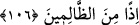
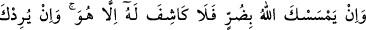
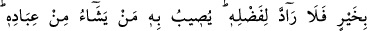
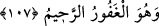

İmam (Fahreddin Râzî) şöyle diyor: Mevlâsı’nı tanıyan kişi, bu mârifetten sonra
O’ndan başkasına yönelecek olursa bu şirk olur. Gönül ehlinin gizli şirk dediği budur.
Mağribî şöyle der:
Eğer cümle ömrümde senden başkasına nazar edersem
Senin aşkının cürmü yâdıyla beni gözden çıkar
106. “Allah’tan başka, sana ne fayda ne de zarar verecek olan şeylere yalvarma.
Eğer böyle yaparsan, muhakkak zâlimlerden olursun.”
İster ayrıca ister ortak koşmak sûretiyle “Allah’tan başka” bir kötülüğü uzaklaştırıp
sevilen bir şeyi celb etmesi için yalvardığında “sana ne fayda ne de” sevdiğin bir
şeyin elinden alınması veya ortadan kaldırılması yahut da başına kötü bir şey geldiği
için kendilerini terk ettiğinde “zarar verecek olan şeylere yalvarma.”
Bu âyet de “De ki: “Ey insanlar...” âyetine bağlı olmakla birlikte emredilenlere dahil
değildir.
“Eğer böyle yaparsan” sana yasaklanan, ne fayda ne zarar verebilen şeylere
yalvarırsan “muhakkak” kendilerine zarar veren “zâlimlerden olursun.” Çünkü Hak
Teâlâ dışındakilerin (mâsivâ) bir tasarruf yetkisi olmadığı halde onlara tasarruf yetkisi
isnâd etmek, ‘bir şeyi hak ettiği yerden başka bir yere koymak’ olur ki zulmün mânâsı da
budur. Bu bakımdan Hak’tan başka ne fayda verici ne de zarar verici vardır. O’nun
zâtından başka her şey yok olacaktır.
Cümle cihanın hayalini yakîn gözünün nûruyla
Hakîkat denizinin yanında serap görürüm
107. Eğer Allah sana bir zarar dokundurursa, onu yine O’ndan başka kaldıracak
yoktur. Ve eğer sana bir hayır dilerse, O’nun keremini de geri çevirecek yoktur. O,
hayrını kullarından dilediğine verir. O çok bağışlayan, çok esirgeyendir.